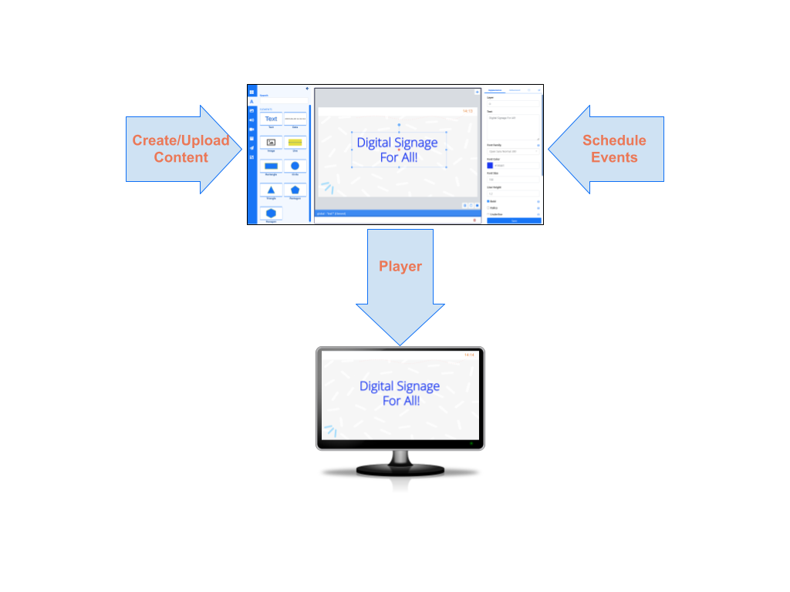
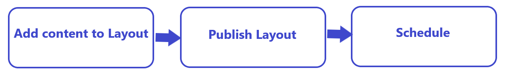
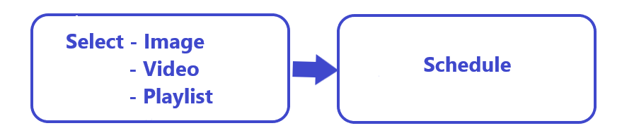

BI Square Brand Activation User Manual
Revision: 4
The BI Square Brand Activation software comprises of a central Content Management System (CMS) where content is created/uploaded and scheduled to Displays. A Player application downloads new content and schedules from the CMS to display on screens:

- The Player application runs on hardware attached to each screen.
- The Player regularly connects to the CMS to check for any new/edited content or schedules which it needs to download.
This User documentation has been created to cover core concepts and CMS features to educate and showcase BI Square Brand Activation capabilities to Users. Pages have been catagorised into clear neat sections to make it easier to find the relevant documentation to match your User role within the CMS.
We recommend that all Users start with the Tour section of this manual to assist Users with First Time Access and to get started Navigating the CMS!
Digital Signage For All!
BI Square Brand Activation provides a flexible and powerful application which has a core ethos in “Digital Signage for all”, regardless of skill level or technological knowledge.
The BI Square Brand Activation software centers on 5 core concepts:
Users
Users are added to the CMS by Administrators and given a Username and Password to securely log in.
For a corporate environment BI Square Brand Activation can also integrate with SAML identity providers such as Active Directory and ADFS!
BI Square Brand Activation supports 3 User Types as well as User Groups and multi-level Feature and Sharing access to all system and user objects within the CMS.
Displays
A Display is the connection from the Player to the CMS which groups together content and schedule information. Each Display is uniquely identified in the CMS so that each Display can have its own Media content, Layout designs and Schedules available each with uniquely identified Reporting statistics.
Media
Media is the content we want to show on Displays which is generally split into two categories:
- File based media - media uploaded and stored in the Library (images and video files for example)
- Layout based media - media configured directly on a Layout which does not have an associated file (RSS feeds and Weather forecasts for example)
BI Square Brand Activation uses powerful Widgets which integrate dynamic third-party content from a variety of sources!
Layouts
A Layout is the complete content design to be shown on Displays. With a powerful Layout Editor Users can easily create eye catching content without having to leave the BI Square Brand Activation CMS. Layouts can then be added to Campaigns to play sequentially when scheduled.
Scheduling
Scheduling is highly flexible and supports scheduling to single Displays as well as to Display Groups. Displays check for new scheduled content periodically and will download new items in advance of playback.
Default Layouts should be assigned to Displays to be shown when nothing else is scheduled!
Core Workflows
BI Square Brand Activation gives Users 2 main workflow options:
- Creating content from the Layout Editor

- Selecting Video/Image files or saved Playlists to directly Schedule:
